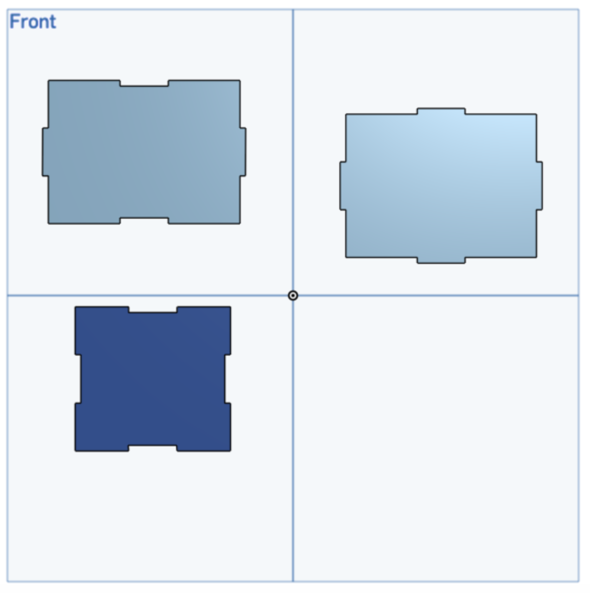
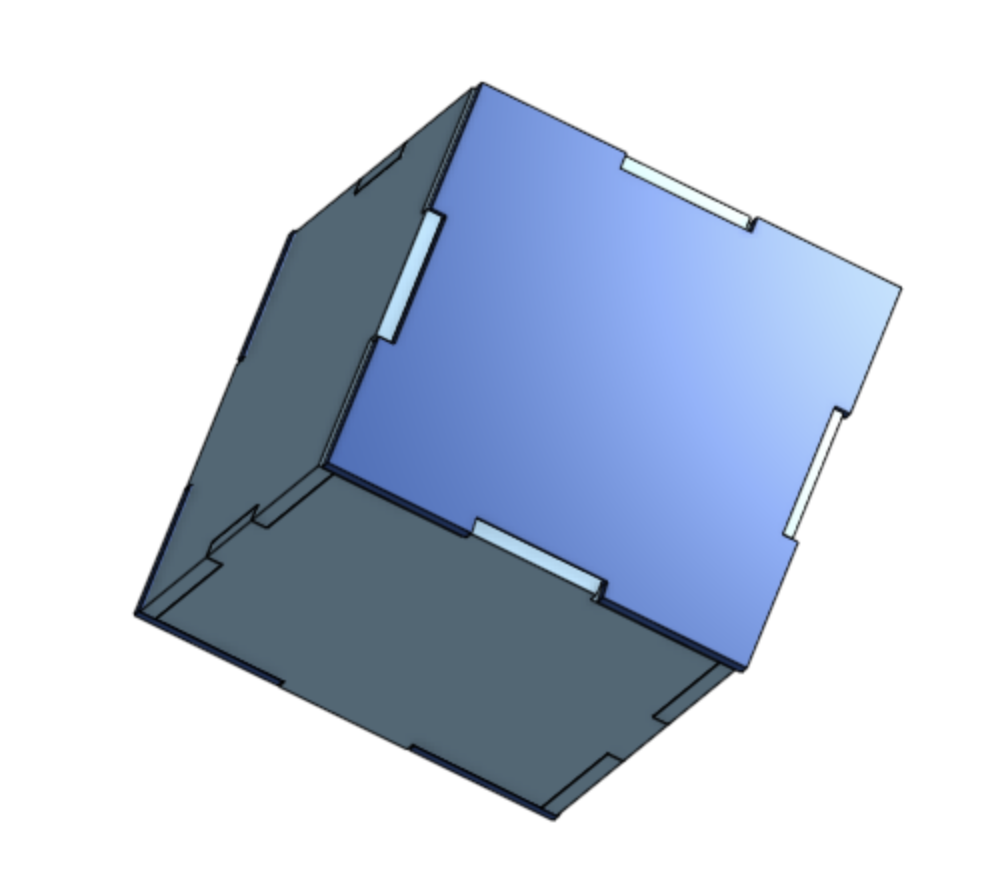
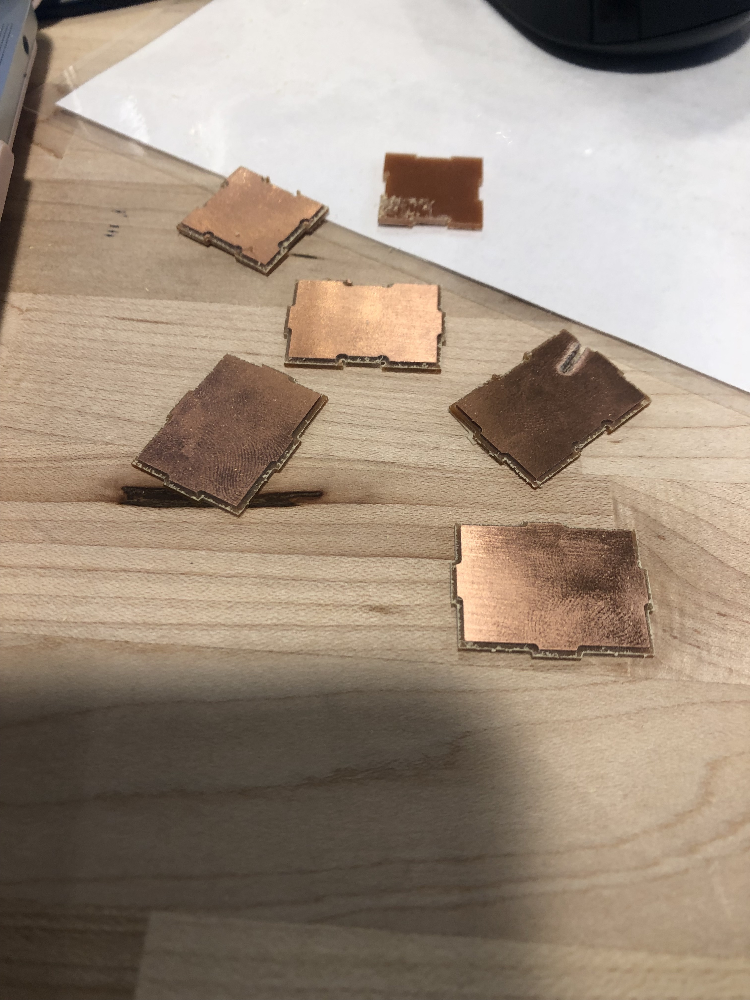
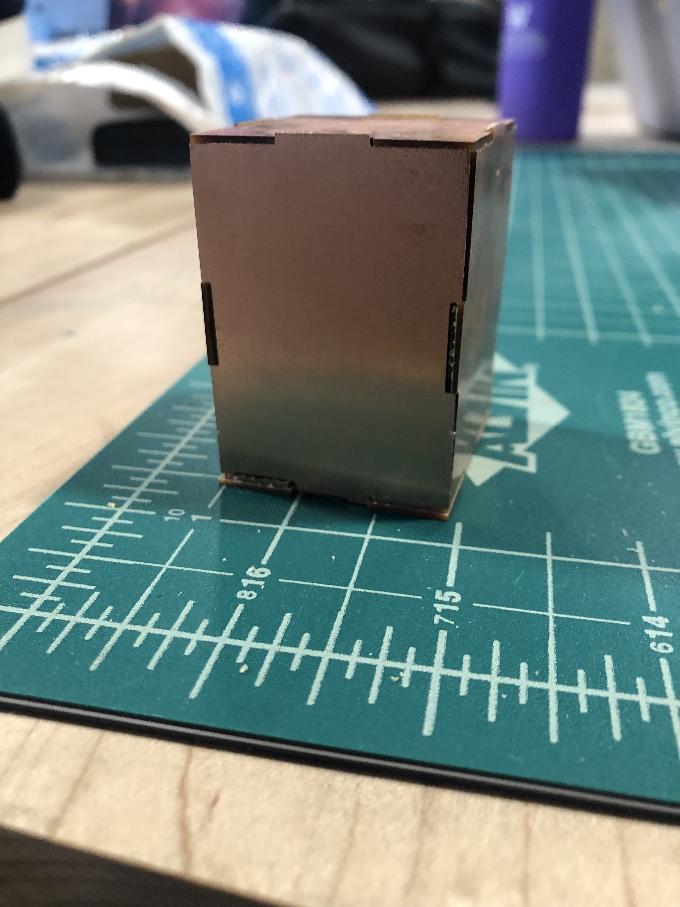

Assignment 5: CNC Milling
After hours and hours of building the box and milling, this is a perfect representation of
me during those trying times.

Process
Making a box and using a mill instead of using a laser cutter to cut the pieces seemed pretty straight forward
so I wasn't worried about the assignment at first. I started the process by making a rectangle on OnShape, extruding
the shapes and importing them into assembly. It took a few tries to get the dimensions of the end pieces of the box correct
but I was able to make it work! After, I loaded the pieces to kicad and then to BantamTools for milling.
Once I had the pieces good to go, I milled shapes into the FR using the 1/32 tip.



Issues
Issue 1 The first issue was getting the dimensions correct in onshape, for some reason when I would put the pieces in the assembly they
didn't fit too well so it took a few tries to get a shape I was satisfied with.
Issue 2 & 3 When I loaded the file into kicad, the shape was stupidly small and I didn't know that this would affect the
milling. The shapes came out really small. I had to play around with the scaling on kicad to get the pieces to be converted correctly. Also, the tape wouldn't hold
and the piece kept flying off.


Final Design
The box fit a tiny bit loose but still held together so overall, I was pleased with it.

Source Files, Specs and Peer Attributions
OnShape Files for the box pieces here
OnShape Assemble for the box here
Peer credit goes to Hannah for helping me figure out the dimensions, troubleshooting the kicad issue and for helping me set up the mill. Also credit to Kira for
helping me trouble shoot when the mill wouldn't work.